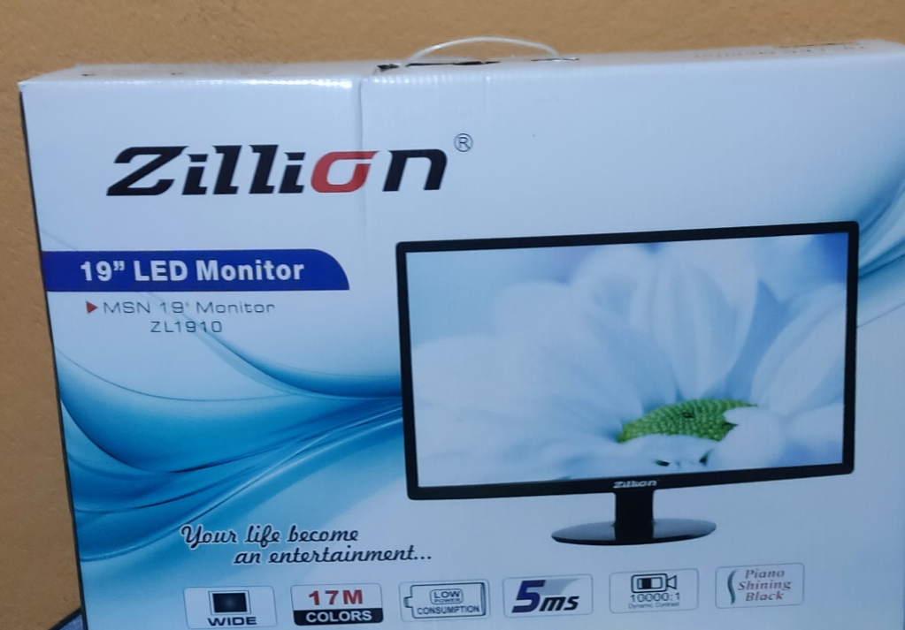
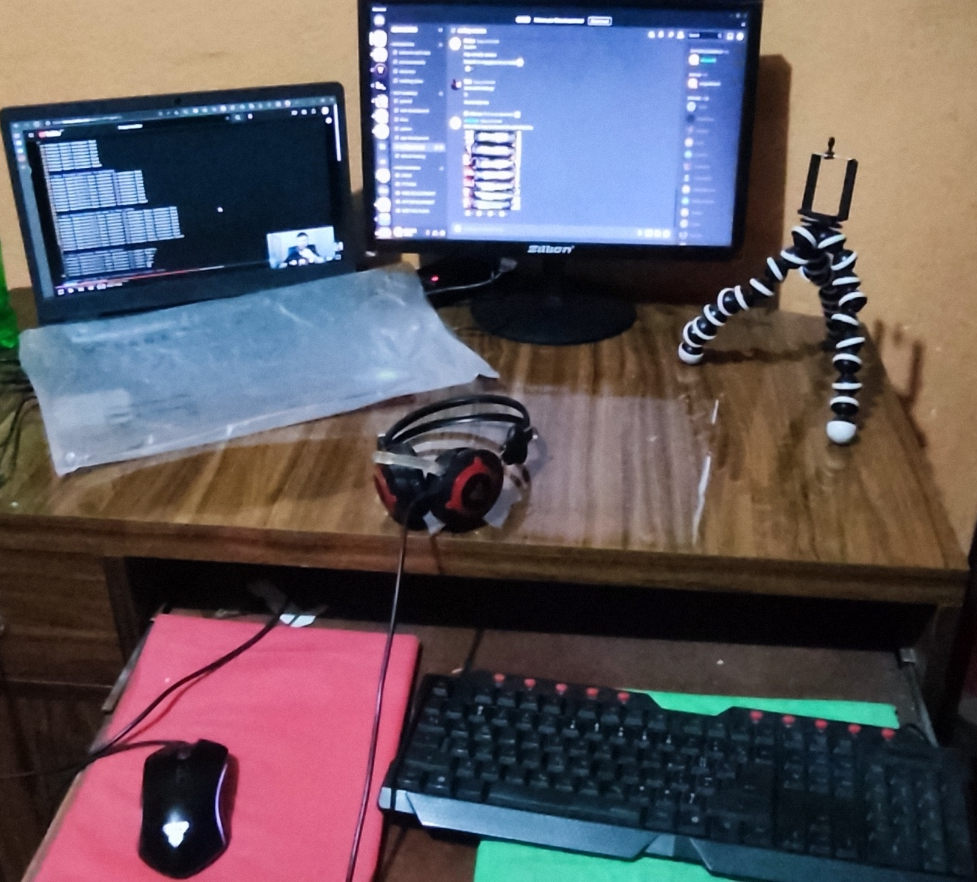

My Experience with using a cheap extra Chinese monitor
 
After a lot of fanboyism / evangelism by my senior mentor and looking at some reviews on the internet, I decided to get a second monitor to have my dual monitor setup. Finally, I got a Chinese off-brand monitor and have a dual monitor setup, it’s cheap, it works, I have had some issues and most importantly I discovered a secret trick to boost the quality by a lot . In this article, I’ve recounted my experience dealing with this new monitor.
I am also planning to write a detailed breakdown on my workflow change/improvement with the dual monitor setup vs the single one sometimes later.
Cost
The price of monitors is quite expensive if you look at decent options, the least expensive branded option I could find was of Dell S21hn monitor, a 21-inch worth 21K NRS, whose 24-inch version is about 24k NRS.
Luckily, for just coding, I didn’t need a decent monitor, just the one that worked and lasted at least 1 year.
I got a Chinese “Zillion 19 inch” at just 6k. I was kinda impressed with the size given the price, the reason was that the price of the monitor gets steep for sizes of more than 19 inches.
Review
My struggle began with putting it together, the monitor holder was pretty unconventional and minimal due to the price point so my youtube search didn’t help, took me an hour to put it in place successfully, but there is no flexibility of angle, the holder looks like it was designed to support it but maybe it’s my incompetence in putting it together idk.
The options were quite good, there are presets of brightness, contrasts and you can customize details yourself as well but it lacks the auto-adjusting features so if you want to tweak the options you need to do a course on colour and graphics I guess lol. I just switch the presets now and then and don’t bother with other options.
One of my worrying parts is the charging junction/regulator box. Compared to my laptop charger’s one it looks very risky and heats up badly, I do have fears of it blasting up sometimes xd, tho I guess the worst that can happen is it getting overheated and ruining the inside circuits. This fear is partly why I religiously remember to shut off the power completely when not in use, there is another reason in the next section.
Quality hack
This was one of my greatest discoveries with the monitor, I boosted the quality by a lot just by only turning the monitor’s power on after logging into the Operating system (Windows and Linux).
When I initially used the monitor, I was kinda ok with the quality (I mean it’s 6k and for coding so meh). But I struggled too much in trying to set the resolution settings. The texts would cut off from the left side when using programs at full screen and also desktop icons at the leftmost row only being half visible.
The resolution setting 1920x1080 would appear only rarely, The setting would not let me bump off more than 1440x900. I started this weird hack hunt messaging myself weird tricks just to get the perfect monitor setup every time.
Finally, I got it, when the windows properly recognized the monitor a long monitor name came up in display settings,
- Display Name: LinkG H2VA001 (Windows)
- Display Name: LinkG Tech HG H2VA001 (Linux)
Otherwise,
- Display Name: SJS 19”
The Linux ones are longer and I found the quality to be (surprisingly) better as well (I tried Fedora and PopOS distro). However, I was quiet with the state of fractional display scaling in Linux distros (didn’t try KDE, only gnome).
Now, all I had to do was figure out how to get OS to recognize the display properly (having a long display name). Turns out that if I just power on the monitor after logging into the OS, it does the trick. I also tried powering on after OS bootup at the login screen but it wasn’t consistent. I don’t know the internal details but it’s most consistent with this hack.
The quality difference is great, especially text rendering and watching at HD quality feels pretty decent. The resolution effect is also fixed I can set up 1920x1080 and not have a cutoff problem on the left side of the monitor. I have to reboot my computer if I can’t get the display to work in this configuration, can’t live without this improvement hack now.